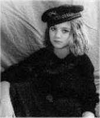
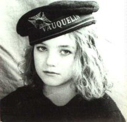
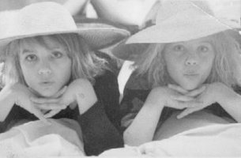
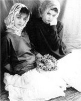
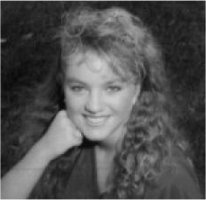
 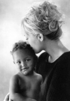
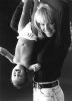
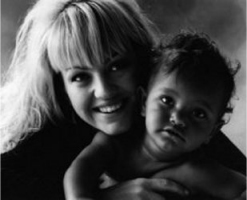
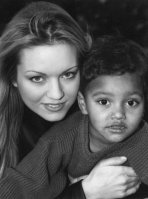
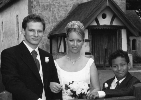
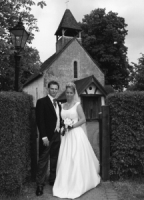
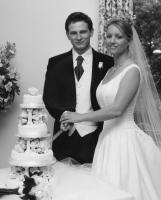
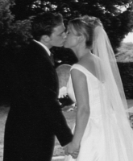
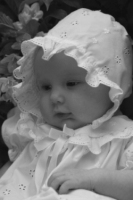
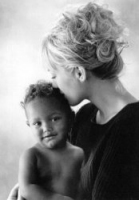
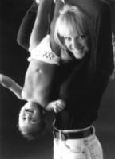
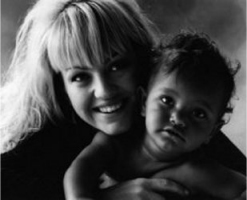
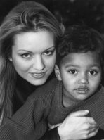
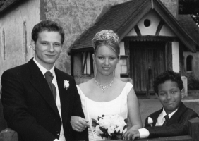
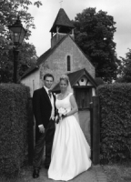
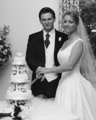
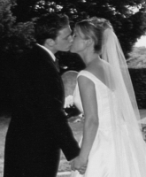
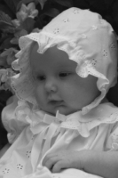
Mother's Memories:
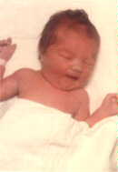I was 29 when I had Daisha. I was very sick to my stomach with her. I use to lie on the couch in misery then jump up to go vomit and lie back down then jump up again etc. I was sick for 5 months! While I was pregnant with Daisha we had to move from our nice house in San Diego to our beehive house, which was difficult. We also went on a trip to Mexico, which didn't help my morning sickness. Daisha was very overdue so I was so thrilled when I finally went into labor, but she ended up being my most painful baby. When she was born the doctor nearly dropped her because she came out so quickly. We were really frightened as we watched the doctor juggling, trying to get a grip on her slippery body. We've always said that she was fed up and shot out, as she had been in so long. Once she was finally born I was so happy. She was so wonderful and cute with lots of long hair. I had a lot of fun taking care of Daisha and loved how she grew into such a fun child. She was always so curious and excited about everything: bugs, snakes, people, everything! She was a bit of a tomboy and always up in a tree or down in the creek. I remember the entomology classes she went to. I also remember when Daisha left her pet snake in the house and it came into my bedroom and cornered me. I stood on the bed screaming for over an hour! Each time Daisha came home from school, she would scream "Mom!" at the top of her lungs. I always thought something awful had happened and would run to see if she was hurt, but she was always fine. She'd just be excited to tell me about everything she'd done that day. She always loved life and if anything ever went wrong, she would get over it fast (and still does). I love Daisha's imagination and pep. She was always interested in trying everything--but she hated her music lessons, so we finally gave them up. She was always very athletic and good at gymnastics. I still remember being stunned as she came flipping out onto the high school gym floor for cheerleading. I couldn't believe it was her. She's a great mother, a wonderful student and a great writer. I'm very proud of her.
Natasha's Memories:
I don't really remember when you were born, but since you are "my baby" I was thinking about some of the adventures we have had...
Remember playing with bugs in the creek - pulling the "houses" off their backs
What about making the waterslide off the barn into the pool when mom and dad were out of town
Smokey and the hill and all the tricks we used to teach him
When the tramp was in the barn and I could bounce you almost to the rafters
Ginger and Wigglesword and Mr. Steak and of course Daisy who would let us brush and ride her
What about catching frogs under the rocks at lake of the woods and mom getting mad that we brought them home (probably why the creek is populated now)
What about filling jeans with rocks from Emigrant lake so mom could landscape the yard and we could finally be done with chores and swim in the muddy lake
Camping at Lost Lake and watching the Nobles get poison oak
Birthday cakes from Grandma Cluff just the way you wanted it
Picking up pumis from Lost Lake so we could have smooth feet
Riding in Nellybell with Dane when he just got his license
Going to the drive-in with the George's in their blue van with the carpet on the ceiling
Having to wear matching clothes when we were little - I don't know if you remember this, but I think there are pictures somewhere
Living together in Seattle - I'll never forget the day I came to your work to talk about being preg with Cage
When Cage and I came to London the first time and the whole way to Stonehenge Edward was trying to tell us it was lame and covered with graffiti and broken down now
And Cage and Dakota spent a lot of time dancing as if they were in their own little musical